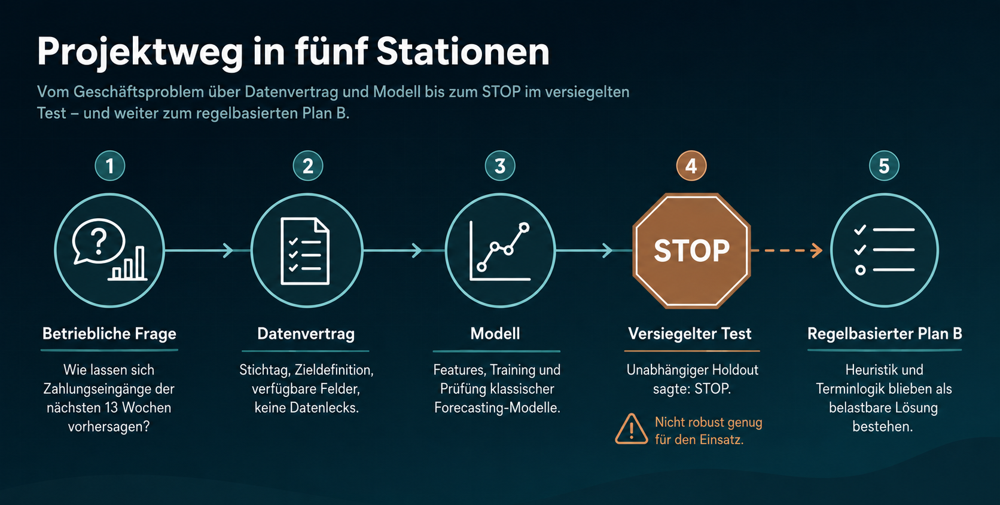
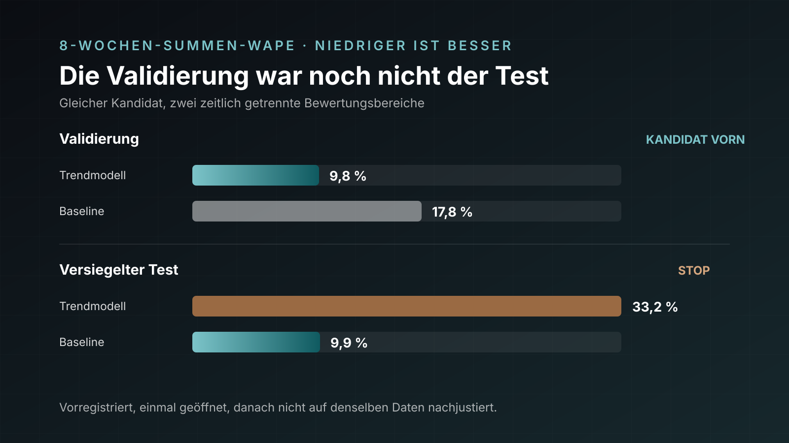

Fallstudie · Machine Learning mit LLMs
Bevor ein Modell rechnen darf
Ich wollte wissen, ob mehrere LLMs aus meinen betrieblichen Daten einen belastbaren Cash-Forecast bauen können. Meine Rolle dabei: die Daten verstehen, die Fachlogik liefern und die Features mitentwickeln. Planung, Implementierung und Prüfung verteilte ich auf mehrere KI-Rollen. Am Ende stoppte der versiegelte Test das Modell. Genau dadurch wurde das Projekt nützlich.
- Cash Forecasting
- LLM-Orchestrierung
- Datenaufbereitung
- Feature Engineering
- Point-in-time
- Python
- Testversiegelung
Das Ergebnis vorweg, weil es die ganze Geschichte prägt: Der vorregistrierte Kandidat verfehlte die Acht-Wochen-Summe im einmal geöffneten Test um 33,19 Prozent. Die vorab eingefrorene, bewusst einfache Baseline lag bei 9,87 Prozent. Ich hätte danach anfangen können zu schrauben. Ich habe es nicht getan, sondern den STOP akzeptiert: Als offiziellen Forecast behielt ich die Baseline, für die operative Planung ergänzte ich ein getrenntes, regelbasiertes Termin-Ledger.
Die eigentliche Arbeit lag ohnehin vor dem Modell. Aus unbereinigten Zahlungen, wechselnden Terminständen, unzuverlässigen Auftragswerten und wenigen Beobachtungen musste überhaupt erst eine faire Lernaufgabe werden. Drei Tage, 14 LLM-Sitzungen, rund 980 Nachrichten, 35 dokumentierte Korrekturen und am Ende 170 automatisierte Tests haben mir gezeigt, was meine Daten tragen — und was nicht.

1. Wie ich die LLMs auf die Aufgabe vorbereitet habe
Ich begann nicht bei null. In drei eigenen Vorversionen — intern schlicht
forecast_0 bis forecast_2 genannt — hatte ich bereits
offene Rechnungen, DC- und AC-Termine sowie statistische Restwerte zu einem
Ledger verbunden. Im Alltag konnte ich damit arbeiten und jede Zahl erklären.
Ein sauber geprüftes Modell war es trotzdem nicht, und das musste ich mir erst
eingestehen: Mein vermeintlicher Test wanderte mit jedem Lauf mit, historische
Stichtage rekonstruierte ich teilweise mit dem heutigen Datenstand, und eine
Kalibrierung verdeckte einen deutlichen negativen Bias. Der aufwendig erklärte
Forecast war als Punktprognose letztlich nur ein flacher Mittelwert.
„schau dir forecast_1 an und dann forecast_0. schreibe einen plan um diese version weiter zu verbessern.“
Meine Nachricht an ChatGPT, 18.07.2026 · OriginalschreibweiseMit ChatGPT begann ich bei der Bestandsaufnahme: Es ließ mich zunächst strukturierte Exporte der Altversionen erzeugen und formulierte daraus einen ausführlichen Vorbereitungsauftrag für Claude. Claude sollte noch kein Modell programmieren, sondern die Aufgabe so weit klären, dass ein Coding-Agent nirgendwo mehr über Ziel, Quellen, Zeitlogik oder Testregeln improvisieren musste. Daraus entstanden ein Daten- und Zielvertrag, ein Point-in-time-Protokoll, Evaluationsgates, ein Notebook-Blueprint, spezialisierte Prüfrollen und ein blockweiser Ausführungsplan.
Das Rossmann-Projekt war nur mein Methodenhandbuch. Mein Uni-Projekt zur Rossmann-Absatzprognose gehört inhaltlich nicht zum Cash-Forecast. Aber ich hatte dort einen ML-Ablauf einmal vollständig durchgearbeitet, und genau dieses Prozessmuster übernahmen die LLMs: Daten vorbereiten → explorativ analysieren → Features entwickeln → Modelle vergleichen → auf einem unangetasteten Test bewerten. Weder Rossmann-Daten noch Fachfeatures noch Modellentscheidungen flossen in dieses Projekt ein.
- Problem und Ziel festschreiben: tatsächlicher Geldeingang nach Bankdatum, acht vollständige Montag-Wochen, reiner Zufluss.
- Daten isolieren: eigener lokaler HERO-Export, unveränderliche Rohdaten, API ausschließlich read-only.
- Zeitachsen trennen: Ereigniszeit, Sichtbarkeitszeit und Zielwoche durften nie wieder vermischt werden.
- Vergleich vor Modellkontakt definieren: Baselines, Metriken, chronologische Splits, Reifefrist und STOP-Regeln standen zuerst fest.
- Arbeit sequenzieren: ein Notebook nach dem anderen, nach jedem Schritt mein Zwischenreview und erst danach die nächste Freigabe.
- Test versiegeln: Kandidaten und Artefakte wurden per SHA-256 gebunden, bevor Zielwerte des Testfensters sichtbar wurden.
„Lies CODEX_SOL_START.md im Projektstamm und führe den Auftrag darin aus.“
Meine Startnachricht an Codex SOL, 18.07.2026Der kurze Startprompt war Absicht. Die eigentliche Intelligenz steckte zu diesem Zeitpunkt längst in der Vorbereitung: Ich gab den LLMs keine lose Aufgabe, sondern eine prüfbare Arbeitsumgebung mit definierten Grenzen. Meine wichtigste Orchestrierungsentscheidung kam allerdings erst nach dem ersten Durchlauf: keine parallelen Sprünge mehr. Ich nahm jedes Notebook einzeln ab, ergänzte neue Fachbefunde und gab erst dann den nächsten Block frei.
2. Legacy-Notebook: Der erste autonome Durchlauf scheitert
Den ersten autonomen Codex-Durchlauf habe ich als Legacy-Notebook archiviert — er dokumentiert, wie weit Autonomie ohne Fachwissen trägt. Codex arbeitete die vorbereiteten Blöcke vom Export bis zur Modellleiter selbstständig ab. Technisch war der Ablauf sauber, fachlich aber noch zu statistisch gedacht: Alle sechs Featuregruppen wurden verworfen, und keines von fünf Modellen schlug die naive Baseline. Der versiegelte Test blieb deshalb geschlossen.
„Das ehrliche Resultat dieser Iteration ist STOP bei der Modellleiter — kein einziges Modell schlägt die naive Baseline.“
Claude bei der Prüfung des Codex-Laufs, 19.07.2026Erst die anschließende Forensik zeigte mir, warum: 91,5 Prozent des vermeintlichen Forderungsbestands bestanden aus stornierten, gelöschten oder nur entworfenen Dokumenten. Mein wichtigster Prädiktor war überwiegend Datenmüll. Und ausgerechnet der Terminkalender fehlte — die einzige Quelle, die dem späteren Geldeingang zeitlich vorausläuft. Dieser Fehlschlag war ärgerlich, aber produktiv: Er löste die eigentliche Datenrevision aus, Korrektur K-1 bis K-35, jede mit Befund, Wirkung und Entscheidung.
3. Notebook 01 — Datenvorbereitung und Neuversiegelung
Im ersten aktiven Notebook ließ ich bewusst nicht modellieren, sondern prüfen, ob die Lernaufgabe überhaupt stimmt. Das Notebook verifiziert den eingefrorenen HERO-Datenexport, archiviert den alten 13-Wochen-Stand, rekonstruiert die Zielgröße, bestimmt die Labelreife und versiegelt den neuen Acht-Wochen-Split — ohne dabei ein einziges Testziel zu laden.
„Du hast genau die richtige Frage gestellt. Ich hatte Stornos nur aggregiert saldiert und nie geprüft, ob die ‚nie bezahlten‘ Rechnungen storniert sind. Sie sind es.“
Claude während der Datenrevision, 19.07.2026Was als Einnahme zählt, konnte mir kein Modell abnehmen — das musste ich fachlich entscheiden: das echte Bankdatum, positive Zuflüsse, gültige Dokumente. Stornierte Zahlungen, Buchungen auf ungültigen Dokumentständen und negative Posten wie Gutschriften oder Provisionen flogen raus. Betroffen war jeweils nur ein kleiner Teil der Zeilen, die Wirkung auf die Zielreihe war trotzdem erheblich: keine negative Woche mehr, und der Variationskoeffizient fiel von 3,655 auf 0,833. Ein extremer historischer Ausschlag, über den ich lange gerätselt hatte, entpuppte sich schlicht als Tippfehler in einer stornierten Rechnung.
def weekly_cash_target(payments):
clean = payments[
payments["paid_date"].notna()
& (payments["amount"] > 0)
& ~payments["is_cancellation"]
& ~payments["document_cancelled"]
]
clean["target_week"] = clean["paid_date"].map(monday_of)
return clean.groupby("target_week")["amount"].sum()Die kleinste Reifefrist, die mindestens 90 Prozent der Zeilen und Beträge abdeckte, lag bei 63 Tagen. Daraus ergaben sich 64 zulässige Prognosestichtage: 24 für die Entwicklung, sieben Puffer, 13 Validierung, sieben Embargo und 13 Test. Sämtliche Split- und Leakage-Prüfungen bestanden; ein Testzugriff ohne Vorregistrierung wurde technisch abgewiesen — nach den Erfahrungen mit meinen Altversionen wollte ich genau diese Härte.
event_at = wann etwas fachlich passiert
available_at = ab wann ich es im System wissen konnte
target_at = für welche Zahlungswoche es zählt
usable = available_at <= forecast_origin4. Notebook 02 — Explorative Datenanalyse
Das zweite Notebook durfte ausschließlich in den Entwicklungsbereich schauen. Es beschreibt 31 eindeutige Zielwochen, sechs naive Baselines und die Grenzen der Daten, ohne Validierungs- oder Testziele für die Modellwahl anzufassen. Eine Hoffnung starb dabei früh: Ein Jahresmuster war mit null vollständigen 52-Wochen-Zyklen schlicht nicht schätzbar; Saisonfeatures waren damit vom Tisch.
Statt eines Saisonmusters fand die EDA einen Niveau-Lag. Die eingefrorene Baseline B3 — der Mittelwert der letzten 13 reifen Wochen — unterschätzte 22 von 24 Entwicklungsstichtagen. Zwischen der frühen und der späten Hälfte stieg die tatsächliche Acht-Wochen-Summe deutlich, während die verzögerte Baseline sank; ihr Bias verschlechterte sich von −9,33 auf −37,06 Prozent. Gleichzeitig lag der Wochenfehler 17,02 Prozentpunkte über dem Fehler der Acht-Wochen-Summe. Einzelne Wochen waren stark verrauscht, Periodensummen deutlich stabiler — eine Erkenntnis, die später die gesamte Bewertung geprägt hat.
„Der alte Hinweis −12,6 % gehört nicht zu dieser versiegelten Vergleichsbasis; das Notebook wird diese Abweichung ausdrücklich kennzeichnen, statt beide Zahlen zu vermischen.“
Codex beim Bau von Notebook 02, 20.07.2026Diesen Befund nahm ich als Gate ab: Kein Modell durfte sich später auf eine hübschere, aber unpassende Kennzahl berufen. Für den Acht-Wochen-Kandidaten galten 25,46 Prozent WAPE als Entwicklungs-Latte, für vier Wochen 25,90 Prozent — eingefroren, bevor irgendein Modell gewählt war.
5. Notebook 03 — Ströme und Feature Engineering
Hier steckte mein größter fachlicher Anteil. Ich übersetzte den Betriebsablauf in drei getrennte Geldströme: Termine → Rechnung → Zahlung, terminloses Geschäft und offene Forderungen. Die Fragen dahinter konnte nur ich beantworten: Welche Termine sind geldrelevant? Wann liegt DC vor AC? Wann gilt der 60/40-Split? Was bedeuten Nullzahlungen und negative Zahlungen? Und welche Statusfelder zeigen nur den heutigen Zustand, nicht den damaligen? Codex setzte meine Antworten anschließend für jeden historischen Stichtag in einem wachsenden Zeitfenster um.
„Die Korrektur verkleinert den Forderungsbestand und verschlechtert den Bias. Das ist richtig so. Kompensiere es NICHT durch einen Aufschlag oder eine Niveaukalibrierung.“
Meine Arbeitsanweisung an Codex vor Notebook 03, 20.07.2026Dieser Satz fasst meine Haltung im ganzen Projekt zusammen: Datenrichtigkeit vor Modellmetrik. Ich wollte keine Regel, die eine falsche Datenbasis rechnerisch wieder passend macht — auch wenn die Kennzahlen dadurch erst einmal schlechter aussahen. Notebook 03 prüfte auf dieser Grundlage vier Blöcke:
- R1 · Auftragswert
- Die aktive Regel erreichte 0,52 Prozent WAPE. Der gesamte Restfehler steckte in den kleinsten Projekten, die zusammen nur rund zwei Prozent des Wahrheitsvolumens ausmachten. Eine Sonderregel hätte also auf einer Handvoll Ausreißer beruht — die ließ ich bewusst weg.
- R2 · Termine
- Der PIT-gemessene Abrechnungssplit blieb an allen 24 Entwicklungsstichtagen stabil bei 0,600. Die zugrunde liegende Stichprobe wuchs über den gesamten Zeitraum aber kaum an. Den Split nach Projekttyp, Größe oder Zeitraum zu differenzieren, wäre reine Scheingenauigkeit gewesen.
- R3 · Ohne Termin
- Der eigene Teilstrom schlug seine Teilstrombaseline, blieb mit 58,14 Prozent WAPE und −32,92 Prozent Bias aber zu ungenau für einen eigenständigen Forecast.
- R4 · Forderungen
- Nullzahlungen schlossen ausnahmslos jede betroffene Rechnung; Skonti wurden betragsmäßig verrechnet. Der rekonstruierte aktuelle Bestand sank dadurch um rund 19,5 Prozent, der historische Forecast blieb trotzdem unverändert, weil die korrigierten Altposten bereits außerhalb der Altersgrenze lagen.
Die wichtigste Analyse des ganzen Projekts fragte nicht „Welches Modell?“, sondern „Was konnte ich am Prognosetag überhaupt wissen?“. Über alle untersuchten Fenster entfielen 7,9 Prozent des späteren Cashs auf bereits sichtbare Rechnungen, 41,9 Prozent auf sichtbare Termine, 13,8 Prozent auf sichtbaren Auftragsbestand, 18,8 Prozent auf Projekte ohne Kerntermin — und 17,6 Prozent auf Vorgänge, deren Termin am Prognosetag noch gar nicht existierte. Am achten Horizont lag die erreichbare Sichtbarkeitsgrenze damit nur bei rund 68 Prozent. Diese Zahl musste ich erst einmal verdauen: Rund ein Drittel der Zukunft stand schlicht noch nicht im System.
„Das ist der Test, der den Plan entscheidet. Zerlegung des tatsächlichen Zahlungseingangs nach Quelle, gemessen am Origin.“
Claude vor der Sichtbarkeitsanalyse, 19.07.2026Damit drehte sich die Reihenfolge meiner Features: Der Kalender war die dominante Quelle, offene Forderungen halfen wegen des kurzen Zahlungsverhaltens nur für den unmittelbaren Horizont. Ernüchternd blieb trotzdem das Ergebnis: Der kombinierte mechanistische Forecast kam auf rund 59,6 Prozent Fehler auf die Acht-Wochen-Summe — gegenüber 25,46 Prozent der simplen Baseline. Das Signal war fachlich sinnvoll, aber ich hatte es noch nicht präzise genug umgesetzt.
6. Notebook 04 — ML-Modell und Kandidatenwahl
Nach Notebook 03 wechselte ich bewusst den ausführenden Agenten: Claude Fable erhielt eine schriftliche Übergabe und baute Notebook 04 eigenständig. Als Erstes widerlegte es meine bisherige Ridge-Schicht — unangenehm, aber wichtig. An 15 von 24 Stichtagen fiel Ridge einfach auf die Baseline zurück; an den neun Stichtagen, an denen das Modell wirklich arbeitete, war es auf beiden Periodenzielen schlechter als die Baseline. Die scheinbare Verbesserung war ein Verdünnungsartefakt.
Die EDA hatte aber eine plausible Lücke gezeigt: Wachstum. Fable ergänzte deshalb eine Leiter aus 13 Varianten, darunter gedämpfte Trends, Holt und Theta. Gewonnen hat kein komplexes ML-Modell, sondern ein drift-korrigierter gleitender Mittelwert — zwei je Stichtag neu geschätzte Größen, null getunte Hyperparameter:
history = mature_weeks(weekly_cash, origin)
level = history.tail(13).mean()
drift = ols_slope(history.tail(52))
forecast[h] = level + drift * (maturity_gap + h)Auf Entwicklung erreichte der Kandidat 19,71 statt 25,46 Prozent Fehler auf die Acht-Wochen-Summe, in der einmaligen Validierung 9,84 statt 17,79 Prozent. Auch für vier Wochen gewann dieselbe Variante. Meine mühsam gebauten Termin- und Forderungsströme lieferten gegenüber dieser schlichten Trendkorrektur dagegen keinen materiellen Zusatznutzen: Eine Kombination lag innerhalb eines Prozentpunkts, die additive Variante fiel deutlich durch. Das anzuerkennen fiel mir nicht leicht. Ich ließ trotzdem zwei formal getrennte, technisch identische Kandidaten für vier und acht Wochen einfrieren.
Zwischenstand, nicht Erfolg: Notebook 04 durfte nur sagen, dass ein Kandidat auf Entwicklung und Validierung besser aussah. Ob daraus ein Forecast werden durfte, entschied allein Notebook 05.
7. Notebook 05 — Der versiegelte Test sagt STOP
Vor dem Test war alles schriftlich gebunden: Modellklasse, Parameterlogik, Featurestand, Baseline, Metriken, Schwellen, Prediction-Artefakte und Hashes. Dann wurde ein Fenster aus 13 unberührten Prognosestichtagen über den Jahreswechsel 2025/26 genau einmal ausgewertet. Ein zweiter Aufruf war technisch gesperrt.

Der Kandidat erreichte 33,19 Prozent WAPE bei +33,19 Prozent Bias: Er überschätzte praktisch jeden Teststichtag. Die eingefrorene Baseline lag bei 9,87 Prozent und +7,15 Prozent Bias. Was passiert war, ließ sich klar benennen: Das 2025er-Wachstum, das die Driftkorrektur in Entwicklung und Validierung so überzeugend nachvollzogen hatte, endete genau im Testfenster. Die Extrapolation lief weiter, die Realität nicht. Beide Kandidaten verfehlten ihre zwingenden Gates und erhielten STOP.
„N4 hat erstmals zwei Kandidaten geliefert, die ihre Latte auf Dev und Validierung schlagen — im einmaligen versiegelten Test sind jedoch beide gescheitert.“
Claude Fable im Abschlussbericht, 20.07.2026Danach habe ich nichts mehr auf dieses Testfenster optimieren lassen. Der Reiz war da — aber genau für diesen Moment hatte ich mir die Regeln vorher gegeben. Der offizielle Forecast fiel regelkonform auf B3 zurück: pro Woche derselbe Mittelwert der letzten 13 labelreifen Wochen. Diese Prognose erklärt keine einzelne Woche. Aber sie ist die einzige Methode, deren Fehler auf einem unberührten Fenster belegt ist.
Das Freigabe-Gate suchte sein Freigabewort als Teilstring. Weil das Wort im eigenen Anleitungstext stand, öffnete Fable den Test vor meiner ausdrücklich beabsichtigten manuellen Freigabe. Vorregistrierung, Hashbindung und die einmalige Auswertung blieben intakt — trotzdem war das Gate fehlerhaft, und zwar durch meinen Prozess, nicht durch das Modell. Ich habe den Vorfall nicht versteckt, sondern als K-35 in die Bewertung der Orchestrierung aufgenommen.
8. Warum Machine Learning in diesem Projekt scheiterte
Das Modell scheiterte nicht an fehlendem Python-Code. Es scheiterte daran, dass die verfügbare Evidenz kleiner und instabiler war als die Lernaufgabe — und das gleich in mehreren Punkten:
- Zu wenig nutzbare Historie: Der belastbare Terminpfad beginnt erst Anfang 2025 — rund 80 Wochen und kein vollständiger Jahreszyklus.
- Zu wenige Ereignisse: Der Zahlungseingang einer Woche hängt an wenigen großen Installationen. Fällt eine davon in die Nachbarwoche, kippt das Wochenbild — die einzelne Woche ist strukturell sprunghaft, während Periodensummen sich ausmitteln und schätzbar bleiben.
- Regimewechsel: Das Wachstumssignal aus 2025 endete im Testzeitraum. Genau die gelernte Drift wurde dadurch zum Fehler.
- Informationsgrenze: Ein relevanter Teil der späteren Einnahmen war am Prognosetag noch nicht im System vorhanden; am achten Horizont waren nur rund zwei Drittel sichtbar.
- Datenqualität: Der erste Forderungsbestand bestand zu 91,5 Prozent aus fachlich ungültigen Dokumenten; das vorhandene Volumenfeld traf den tatsächlichen Auftragswert nur selten direkt.
- Kaum Forderungspuffer: Zwischen Rechnung und Zahlung lagen im Median nur wenige Tage. Offene Rechnungen tragen deshalb kaum Information über acht Wochen.
- Kein inkrementeller Featurewert: Termine enthielten Signal, doch die mechanistischen Ströme schlugen weder die einfache Baseline noch die spätere Trendkorrektur zuverlässig.
„Fehlgeschlagen“ heißt hier deshalb nicht, dass kein Ergebnis entstand. Es heißt, dass ich den Nachweis für den produktiven Einsatz nicht erbringen konnte. Für mich ist das eine deutlich stärkere Aussage als ein Modell, das nur auf bereits gesehenen Daten gut aussieht — von der Sorte hatte ich vorher schließlich schon drei gebaut.
9. Notebook 06 — Einnahmen trotzdem regelbasiert schätzen
„mache ein neues notebook und mache dort das regelbasierte forecasting ohne ml nur durch termine. […] keinen mittelwert über alle 4 wochen sondern rein basierend auf terminen“
Meine Nachricht an Claude nach dem ML-STOP, 20.07.2026 · Rechtschreibung behutsam geglättetDer Betrieb braucht trotzdem einen kurzfristigen Blick auf erwartete Einnahmen — ein STOP bezahlt keine Rechnungen. Deshalb ließ ich nach dem abgeschlossenen Test ein sechstes, ausdrücklich getrenntes Notebook bauen. Es trainiert kein Modell und beansprucht keinen statistischen Sieg. Es übersetzt reale Termine, Rechnungen und Zahlungen in einen nachvollziehbaren Vier-Wochen-Ledger.
Die Regeln und ihre Herleitung
- 1 · Termine
- Nur DC-Montage, der historische Name „Umsetzung“ und AC-Installation sind geldrelevant. Personen- und interne Kalenderkategorien zählen nicht. Gelöschte Termine werden ausgeschlossen.
- 2 · Blöcke
- Termine desselben Projekts und Meilensteins mit höchstens 14 Tagen Abstand bilden einen Installationsblock. Maßgeblich ist das Blockende; je Projekt und Meilenstein zählt nur der letzte Block.
- 3 · Betrag
- Für passende PV-Aufträge werden 60 Prozent dem DC- und 40 Prozent dem AC-Schritt zugeordnet. Der Regelcheck bestätigte diesen Split als Median über die geprüften Projekte. Das ist ein Summenanker, keine präzise Einzelprojektregel.
- 4 · Zeitpunkt
- Aus den letzten zwölf Monaten wurden zwei Mediane abgeleitet: wenige Tage vom Blockende bis zur Rechnung und wenige Tage von der Rechnung bis zur Zahlung. Weil beide Wege in der Praxis kürzer sind als die vertragliche Zahlungsfrist, wird diese Frist als Sensitivität danebengerechnet.
- 5 · Status
- Ist eine passende Rechnung bereits bezahlt, trägt der Termin nichts mehr bei. Eine offene Rechnung geht mit ihrem tatsächlichen offenen Saldo und Fälligkeitsdatum ein; Überfälliges landet in Woche eins.
- 6 · Deckel
- Regelbeträge eines Projekts dürfen Auftragswert minus bereits gezahlten Betrag nicht überschreiten. Beiträge nach dem Vier-Wochen-Fenster werden separat ausgewiesen statt abgeschnitten.
for appointment in visible_appointments(origin):
block = installation_block(appointment, max_gap_days=14)
amount = billable_share(block.stage, project.order_value)
pay_day = block.end + invoice_lag + payment_lag
ledger.add(project, block.stage, monday_of(pay_day), amount)
ledger = remove_paid_items(ledger)
ledger = cap_by_remaining_order_value(ledger)In der ausgeführten Vier-Wochen-Sicht steht hinter jeder Woche eine überschaubare Zahl einzeln benannter Beiträge, die vorderste Woche deutlich dichter belegt als die späteren. Um interne Beträge nicht zu veröffentlichen, setze ich die flache Wochenbaseline hier auf den Index 100: Der Termin-Ledger lag in Woche eins bei 158,8, danach bei 105,3, 80,8 und 93,3 — über vier Wochen 109,5 Prozent der Baseline. Der Unterschied zur offiziellen Punktprognose liegt nicht in der Summe, sondern in der Erklärbarkeit: Ich sehe, in welcher Woche welcher Termin oder welche offene Rechnung den Zahlungseingang tragen müsste.
Dieses Notebook ist nicht auf einem neuen versiegelten Fenster backtest-validiert. Terminloses Geschäft, spätere Terminverschiebungen und abweichende Abrechnungssplits fehlen teilweise; für andere Gewerke bräuchte es eigene Regeln. Ich lese den Ledger deshalb als operative Untergrenze und Handlungsinstrument — nicht mehr. Statistisch belegt bleibt allein die Baseline.
10. Was ich aus dem Projekt trotzdem mitnehme
- Datenaufbereitung war das eigentliche Modell. Erst die fachliche Bereinigung machte aus einer kaputten Zielreihe eine prüfbare Prognoseaufgabe.
- Feature Engineering beginnt im Betrieb. Kein LLM konnte aus einer Spalte ableiten, ob eine Nullzahlung eine geschlossene Abschlussrechnung oder ob ein Termin ein interner Kalendereintrag ist. Diese Bedeutung musste ich liefern.
- Ein Prozessmuster ist wertvoller als kopierter Code. Mein Rossmann-Projekt wurde zum wiederverwendbaren Referenzhandbuch für Phasen, Artefakte und Entscheidungstore — nicht zur fachlichen Vorlage.
- Ein STOP schützt reale Entscheidungen. Ohne versiegelten Test hätte ich ein Modell eingesetzt, das die kommende Periode um etwa ein Drittel überschätzte.
- Eine Baseline und ein Ledger erfüllen verschiedene Aufgaben. Die Baseline liefert die statistisch ehrlichste Periodensumme; der Termin-Ledger erklärt, woher Einnahmen kommen könnten und wo ich operativ eingreifen kann.
- Die nächste Verbesserung ist mehr Historie. Regelmäßige unveränderliche Snapshots machen Terminänderungen und neue Statusfelder künftig point-in-time-fähig. Erst ein neues, ausgereiftes Testfenster erlaubt einen weiteren Modellversuch.
Einnahmen schätzen kann ich also weiterhin — aber ich trenne jetzt sauber zwischen einer statistisch geprüften Gesamterwartung und einer regelbasierten, erklärbaren Wochenplanung. Diese Trennung ist das eigentlich produktive Ergebnis des gescheiterten ML-Versuchs.
11. Wer welchen Teil übernommen hat
- Ich
- Ich definierte die betriebliche Frage, beantwortete die Fachfragen, orchestrierte Datenaufbereitung und Features, nahm jedes Notebook ab, wechselte die Agentenrollen und akzeptierte den STOP.
- ChatGPT
- Ich nutzte ChatGPT für die Forensik meiner frühen Forecasts, strukturierte Analyseprompts und den ausführlichen Vorbereitungsauftrag an Claude.
- Claude · Opus
- Claude baute aus meinen Quellen und dem Rossmann-Prozessmuster die Verträge, den Notebook-Plan und das Korrekturregister; ich schärfte mit Claude die Fachlogik.
- Codex SOL
- Codex setzte den ersten autonomen Lauf und später die revidierte Kette bis Notebook 03 um. Mit meiner sequenziellen Freigabe arbeitete es deutlich kontrollierter.
- Claude · Fable
- Fable übernahm Notebook 04 und 05, fror die Kandidaten ein, wertete den Test aus und dokumentierte den STOP; anschließend setzte es das getrennte Termin-Notebook 06 um.
Die LLMs haben mir den Forecast nicht „abgenommen“. Ich habe ihre Arbeit in eine überprüfbare Kette übersetzt, ihre Fehler sichtbar gemacht und ihre Stärken dort genutzt, wo sie belastbar waren. Am Ende war nicht das komplexeste Modell richtig, sondern die einfachste Aussage, die den Test überlebt hat.